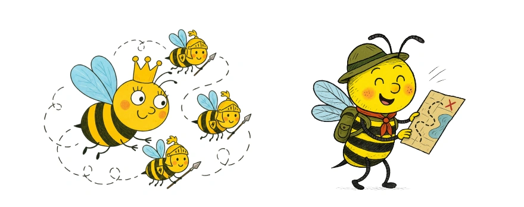

Month 9 · Level B · Week 1
Bees at work and at the park
✏️ Trace & say!
Trace it. Hear it. Say it! ⭐

Bees build hives.
Tap the sentence to trace it.🎶 Listen, then say it!
Say it. Pause when you’re done, or tap All done!Bees protect the queen.
Tap the sentence to trace it.🎶 Listen, then say it!
Say it. Pause when you’re done, or tap All done!Bees find flowers.
Tap the sentence to trace it.🎶 Listen, then say it!
Say it. Pause when you’re done, or tap All done!Follow the letters and tap Go! 🌟
For grown-ups
Recording automatically checks the recognized words where supported. Your browser’s speech service may process audio remotely. This checks words, not pronunciation. Recordings stay in this page until you leave.